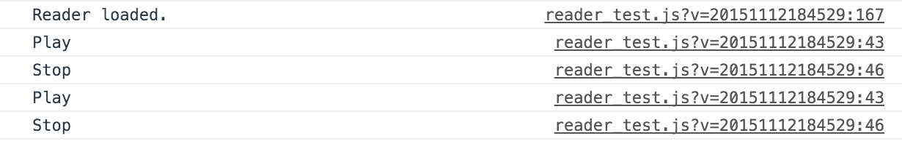
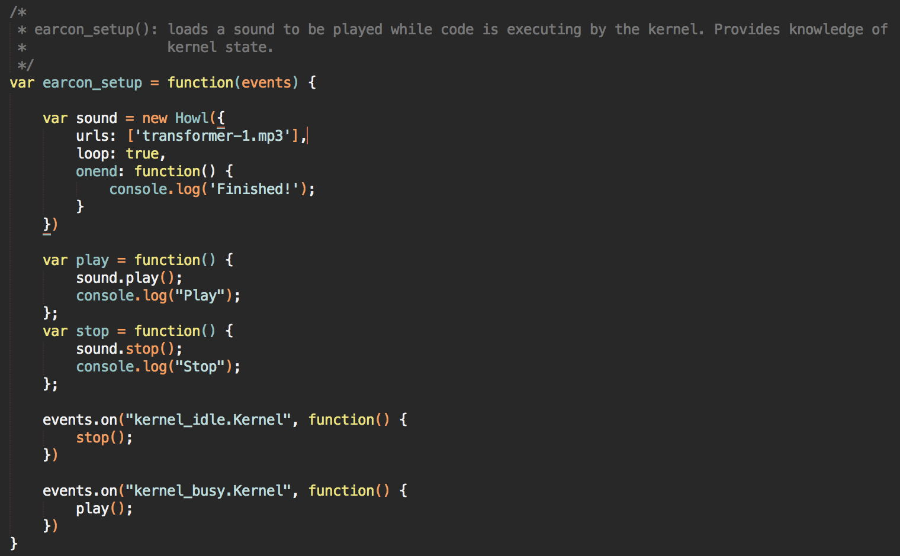

Getting started with nbreader is pretty simple. Run the following cells of code in any notebook to download and install the extension.
import notebook.nbextensions
nbreader = 'https://raw.githubusercontent.com/jameslmartin/jupyter-a11y/master/nbreader.js'
notebook.nbextensions.install_nbextension(nbreader, user=True)After the file is downloaded, load the extension by running this block of code with the JavaScript magic:
%%javascript
Jupyter.utils.load_extensions('nbreader')Click Help > Keyboard Shortcuts to see your available list of shortcuts. Several\ of the main functions include:
Shift-R to read the highlighted cell Shift-ESC to cancel reading of the cell (useful for code with links and multiple lines) Shift-S to skip the current line of the code cell being read If you have any ideas for how to expand and build on the functionality of the nbreader, get in touch by leaving a comment on the current gist page.
To persist the nbreader extension, run the following code to modify your Jupyter configuration profile:
from notebook.services.config import ConfigManager
ip = get_ipython()
cm = ConfigManager(parent=ip, profile_dir=ip.profile_dir.location)
cm.update('notebook', {"load_extensions": {"nbreader": True}})To learn more, check out Pete Parente's post about extending Jupyter notebooks. Pete also walks through an example of writing your own nbextension.
Creating a new notebook extension (nbextension) is easy. Jupyter nbextensions are written and installed using JavaScript. From my explorations, I've found that nbextensions consist of an outer function that is loaded upon a notebook being booted. There are a few different ways to write nbextensions, but I've observed the following structure:
define(function(){
"use strict"
var Jupyter = require('base/js/namespace');
...
var load_extension = function(){
...
}
return { load_ipython_extension: load_extension }
})Digging a little further, the load_ipython_extension function is very important. For example, this is the current iteration for reader:
var load_extension = function(){
var _read = Jupyter.keyboard_manager.actions.register(read, 'read highlighted cell', 'accessibility')
var _kill = Jupyter.keyboard_manager.actions.register(kill, 'cancel reading of cell', 'accessibility')
var _mode = Jupyter.keyboard_manager.actions.register(get_mode, 'read the mode of current cell', 'accessibility')
console.log("Reader Loaded")
Jupyter.keyboard_manager.command_shortcuts.add_shortcut('Shift-R', _read)
Jupyter.keyboard_manager.command_shortcuts.add_shortcut('Shift-ESC', _kill)
Jupyter.keyboard_manager.command_shortcuts.add_shortcut('CTRL-M', _mode)
}Note that we are registering several functions (read, kill, and get_mode) to the Jupyter keyboard manager as actions, then associating shortcuts.
From my observations, this load_extension function is called for every extension you have installed for that notebook.
To double check these shortcuts are registered, click Help then Keyboard Shortcuts. The messages passed as the second argument to the register function are not the ones displayed in the Keyboard Shortcuts window. Let's take a look at the kill function specifically to see where these messages are specified.
var kill = {
help:'cancel reading of cell',
handler : function () {
window.speechSynthesis.cancel();
}
}We see the help messages are specified as a property of the kill action.
Each action is an object with at least a help message and a handler, which is a function. In the case of kill, it simply cancels all speech messages in the queue. Note that the handler function need not take any arguments.
We can also bind JavaScript functions to kernel events. This gives us tremendous flexibility to wrap kernel events by "hooking" into the communication between the notebook UI and the kernel. This allows us to take an approach similar to emacspeak.
For example, we can play earcons as the kernel transitions from busy to idle. Similar to the gray circle in the top right of the notebook interface or the [*] seen next to the running cell, this earcon gives users an idea of the state of the kernel.
The following code cell is an example of how to tap into Jupyter's events data structure.
%%javascript
var events = require('base/js/events'); //Use require.js to get list of events
//...
/*
* earcon_setup(): loads a sound to be played while code is executing by the kernel. Provides knowledge of
* kernel state.
*/
var earcon_setup = function(events) {
var play = function() {
console.log("Play")
};
var stop = function() {
console.log("Stop")
};
events.on("kernel_idle.Kernel", function() {
stop(); // Bind the stop() function to when the idle event fires
})
events.on("kernel_busy.Kernel", function() {
play(); // Bind the play() function to when the busy event fires
})
}
In the developer's console in Chrome, we can see when these events are fired. The kernel transitions between the idle/busy states on startup, so this is a fairly naive binding.

The above screenshot was generated by running a code cell twice. Looking in the code for my test file (reader_test.js) for the reader nbextension, we see the code:

Note that this earcon_setup function is called in the load_extension function discussed in a previous post. This function makes use of closures in JavaScript. The functions play() and stop() store the Howl and allow the sound to be played when the kernel events fire.
One of the great features of JavaScript programming on the web is the ability to embed other libraries as scripts in your website. Libraries like jQuery, Bootstrap, and D3.js are three examples and add tons of flexibility to websites. Since notebook extensions are not yet maintained with a package manager like npm, the easiest way to include JavaScript libraries is through jQuery. Jupyter's front end already makes use of jQuery, so we can use the jQuery $.getScript() function to download whatever we need.
nbreader uses howler.js to create and trigger sounds when kernel events are fired. The code for grabbing the howler.js library is below:
%%javascript
var howler = 'https://cdnjs.cloudflare.com/ajax/libs/howler/1.1.28/howler.min.js';
// jQuery Deferreds
var $voices_loaded = $.Deferred();
var $howler = $.Deferred();
$.getScript(howler)
.done(function(script, textStatus) {
console.log("Howler loaded");
$howler.resolve();
})
.fail(function(jqxhr, settings, exception) {
console.log("Howler failed to load");
console.log(exception)
});
In addition to the $.getScript() function, we make use of jQuery Deferred objects. These are super useful abstractions that allow us to ensure the libraries load before the rest of the nbextension is loaded. In the load_extension function mentioned in the Installation post, we first wait on the Deferred objects to be resolved.
%%javascript
var load_extension = function() {
$.when($howler, $voices_loaded)
.done(function() {
console.log("Scripts loaded")
...
});
}
$voices_loaded is another Deferred object I use to make sure the Web Speech voices load before the rest of the extension is loaded. As you can see, the jQuery $.when() function blocks waiting for all the Deferred objects it is given as arguments. With the combination of $.getScript() and Deferred objects, we can expand notebook extensions to make use of any JavaScript library.
We previously showed you can bind actions of the Notebook to events that are triggered by the Kernel. We have started a running list of these events located here. If you know what a specific event does, please contact me by finding my email address below.
In order to mimic Emacspeak's function of reading characters as they are typed, we use jQuery delegation to bind a listener to current selected cell in the notebook. The code is below:
$(document).on('keypress', '.code_cell.selected', function(e){
var charCode = e.charCode;
if (mode === 'edit' && e.ctrlKey === false){
read_character(charCode);
}
})
This listener allows us to capture keypress events. We filter out keypresses that are a result of keyboard shortcuts and send the character code to another function that creates a message for the WebSpeech API. Special messages for charactes such as braces and slashes are created, but alphanumeric characters can be converted to strings and read directly. As this extension progresses, we will add support for more ASCII characters.
One feature we are looking to implement would be to read an entire word whenever a whitespace is entered after a character.